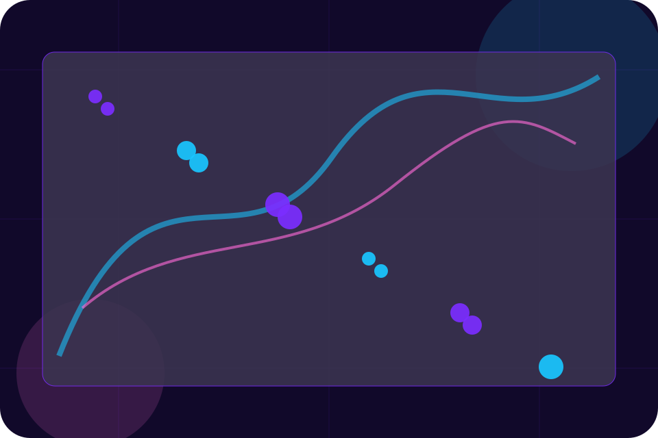
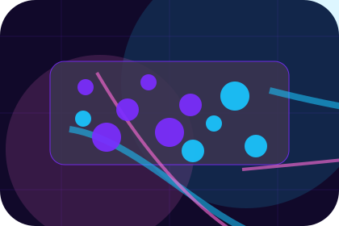
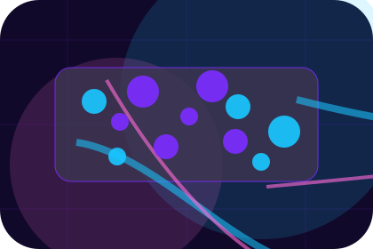
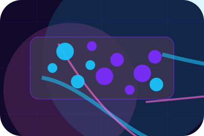
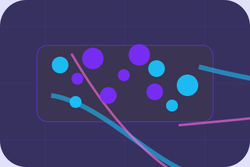

Evidence
Visible proof that helps visitors believe the claims behind regulation.
Compliance / 01
Compliance opens as a clear cybersecurity decision hub: what Cipher offers, who it helps, why it matters, and which route to take first.
The first screen combines positioning, proof, primary action, and fast internal navigation, so people can act immediately or compare the rest of the compliance route with context.
Purple cloud-risk hero
Select the closest route and Cipher keeps the next step, proof, and follow-up expectation aligned with privacy and threat reduction.

Compliance / 02
Regulation gives the proof layer for compliance: standards, evidence, and reassurance that make the next decision feel grounded.
Instead of relying on vague claims, Cipher presents visible standards, process cues, and proof artifacts that help cybersecurity visitors judge fit.
Explore Compliance

Visible proof that helps visitors believe the claims behind regulation.
Compliance / 03
GDPR gives the proof layer for compliance: standards, evidence, and reassurance that make the next decision feel grounded.
Instead of relying on vague claims, Cipher presents visible standards, process cues, and proof artifacts that help cybersecurity visitors judge fit.
Explore ComplianceVisible proof that helps visitors believe the claims behind gdpr.
The quality, safety, or operating expectation this section makes explicit.
What becomes clearer before someone decides whether to request an audit.
Compliance / 04
LGPD gives the proof layer for compliance: standards, evidence, and reassurance that make the next decision feel grounded.
Instead of relying on vague claims, Cipher presents visible standards, process cues, and proof artifacts that help cybersecurity visitors judge fit.
Explore ComplianceVisible proof that helps visitors believe the claims behind lgpd.
The quality, safety, or operating expectation this section makes explicit.
What becomes clearer before someone decides whether to request an audit.
Compliance / 05
ISO gives the proof layer for compliance: standards, evidence, and reassurance that make the next decision feel grounded.
Instead of relying on vague claims, Cipher presents visible standards, process cues, and proof artifacts that help cybersecurity visitors judge fit.
Explore ComplianceCipher structures iso around evidence, standard, and a clear next route so visitors can compare the block quickly before they request an audit.
Request AuditCompliance / 07
Policies gives the proof layer for compliance: standards, evidence, and reassurance that make the next decision feel grounded.
Instead of relying on vague claims, Cipher presents visible standards, process cues, and proof artifacts that help cybersecurity visitors judge fit.
Explore ComplianceVisible proof that helps visitors believe the claims behind policies.
The quality, safety, or operating expectation this section makes explicit.

What becomes clearer before someone decides whether to request an audit.
Compliance / 08
Evidence gives the proof layer for compliance: standards, evidence, and reassurance that make the next decision feel grounded.
Instead of relying on vague claims, Cipher presents visible standards, process cues, and proof artifacts that help cybersecurity visitors judge fit.
Explore ComplianceVisible proof that helps visitors believe the claims behind evidence.
The quality, safety, or operating expectation this section makes explicit.
What becomes clearer before someone decides whether to request an audit.
Compliance / 09
Reporting gives the proof layer for compliance: standards, evidence, and reassurance that make the next decision feel grounded.
Instead of relying on vague claims, Cipher presents visible standards, process cues, and proof artifacts that help cybersecurity visitors judge fit.
Explore ComplianceVisible proof that helps visitors believe the claims behind reporting.
The quality, safety, or operating expectation this section makes explicit.
What becomes clearer before someone decides whether to request an audit.
Compliance / 10
Cipher closes the compliance route with a clear action, a quick reminder of the value, and a low-friction way to request an audit.
Visitors who are ready can use the primary action. Visitors who are still comparing can scan the section links, proof, and support routes before they request an audit.
Request AuditThe final block keeps the choice simple: act now, compare one more proof route, or send enough detail for a focused response.
Request Auditprivacy and threat reduction
A cloud-risk command site with neon topology, rounded security modules, compliance proof, and audit routing. Compliance ends with a direct path to request an audit, plus enough context for visitors who still need to compare.

Request AuditInformation is provided for planning and should be reviewed for the final client, location, and operating rules.